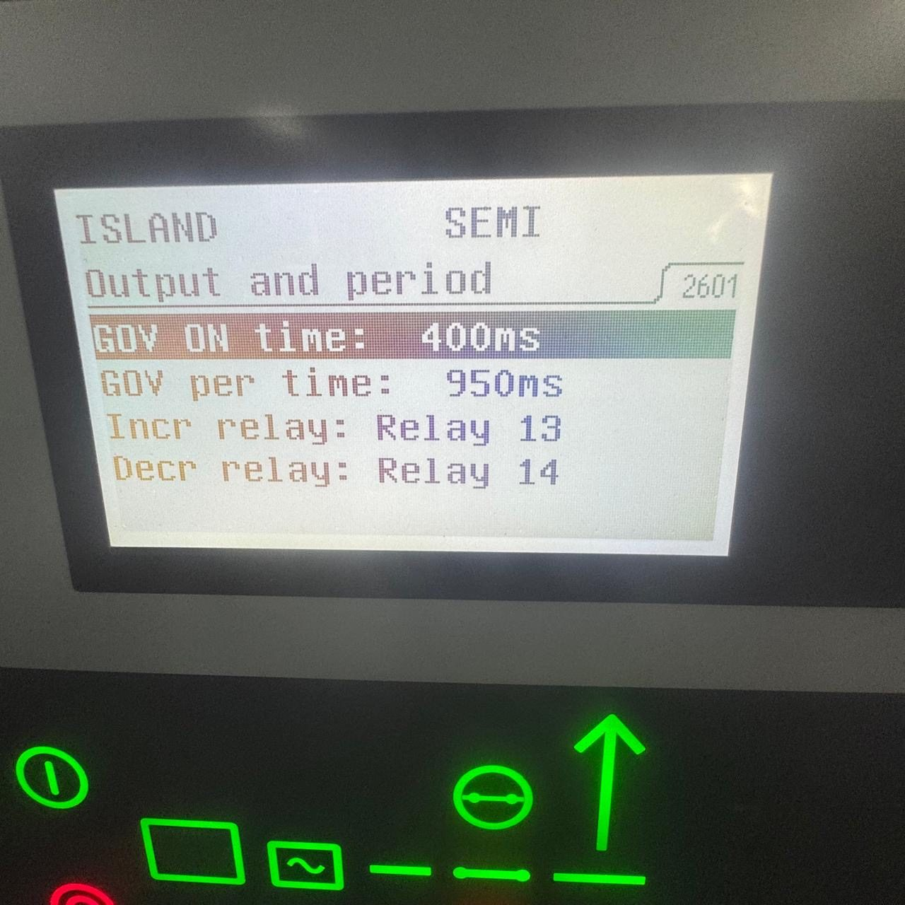

Τι αναλαμβάνουμε
- Εγκατάσταση και αντικατάσταση DEIF generator controllers σε main και emergency switchboards
- Παραμετροποίηση προστασιών: overcurrent, reverse power, over/under voltage και frequency, unbalance
- Ρύθμιση synchronizing — dead-bus, phase matching, breaker closing time compensation
- Ρύθμιση kW / kVAr load sharing μεταξύ ανόμοιων γεννητριών
- Διαμόρφωση λογικής PMS: auto start/stop, priority, heavy-consumer request, load shedding
- Αντικατάσταση τερματισμένων μονάδων παλαιάς γενιάς με τρέχουσες σειρές, με διατήρηση της καλωδίωσης όπου γίνεται
- Ανάγνωση και ερμηνεία event/alarm logs μετά από συμβάν
Συνήθη συμπτώματα & βλάβες
- Η γεννήτρια δεν κλείνει breaker ή κλείνει εκτός φάσης με αισθητό κτύπημα
- Reverse power trip σε κάθε προσπάθεια παραλληλισμού ή αποσύνδεσης
- Μία γεννήτρια «τραβάει» όλο το φορτίο ενώ η άλλη πηγαίνει σε reverse
- Ασταθές kVAr sharing και κυκλοφορούντα ρεύματα μεταξύ των γεννητριών
- Controller σε συνεχή alarm ή σε κατάσταση block χωρίς προφανή αιτία
- Χαμένος κωδικός παραμετροποίησης — κανείς δεν μπορεί να μπει στη μονάδα
Τι παραδίδουμε
- Πλήρες parameter file της μονάδας, εξαγόμενο και παραδοτέο
- Πρωτόκολλο δοκιμών παραλληλισμού και load sharing με πραγματικό φορτίο
- Καταγραφή των ρυθμίσεων προστασίας σε πίνακα, για το τεχνικό τμήμα
- Ενημερωμένο single-line διάγραμμα εφόσον άλλαξε η τοπολογία
Εξοπλισμός & πρωτόκολλα
- DEIF Automatic Gen-set Controllers (σειρές AGC)
- DEIF Multi-line 2 μονάδες προστασίας και ελέγχου
- DEIF Paralleling & Protection Units, Gen-set Protection Units
- Display units, Loadsharers και εξοπλισμός συγχρονισμού
- Επικοινωνία μονάδων σε CAN bus και Modbus προς AMS/SCADA
Από το πεδίο

Συχνές ερωτήσεις
Δουλεύετε μόνο σε DEIF;
Όχι. Το DEIF είναι το πιο συχνό στα πλοία που εξυπηρετούμε, αλλά η λογική generator control και PMS είναι κοινή. Εξυπηρετούμε και εγκαταστάσεις άλλων κατασκευαστών.
Έχω παλιά μονάδα που δεν υποστηρίζεται πια. Τι γίνεται;
Αποτυπώνουμε τι κάνει σήμερα, προτείνουμε τη σύγχρονη αντίστοιχη μονάδα και όπου είναι εφικτό διατηρούμε την υπάρχουσα καλωδίωση και τα CT/VT για να μείνει η επέμβαση εντός port stay.
Μπορείτε να αλλάξετε ρυθμίσεις προστασίας εν πλω;
Οι ρυθμίσεις προστασίας αλλάζουν μόνο με τεκμηρίωση και σε συνεννόηση με το τεχνικό τμήμα και, όπου απαιτείται, τον νηογνώμονα. Δεν πειράζουμε προστασίες για να «φύγει» ένα alarm.